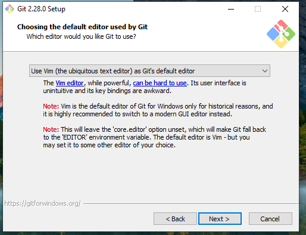

¿Como Instalar Git?
Algunas personas desean instalar Git a partir de su código fuente debido a que obtendrán una versión más reciente. Los instaladores binarios tienden a estar un poco atrasados. Sin embargo, esto ha hecho muy poca diferencia a medida que Git ha madurado en los últimos años.
Paso 1
Dirigirse al sitio web de Git: https://git-scm.com/download/wins

Paso 2
Escoger la versión que es compatible con nuestro sistema operativo

Paso 3
Cuando el archivo esté descargado ejecutar como administrador y aceptar las condiciones de uso.
Paso 4
Indicamos donde se guardara la aplicacion

Paso 5
Definimos en que editor de código ver los códigos del programa
Paso 6
Dejar las demás ventanas por defecto al finalizar elegir la opción git bash para que sucesivamente demos al botón Next y finalice la instalación